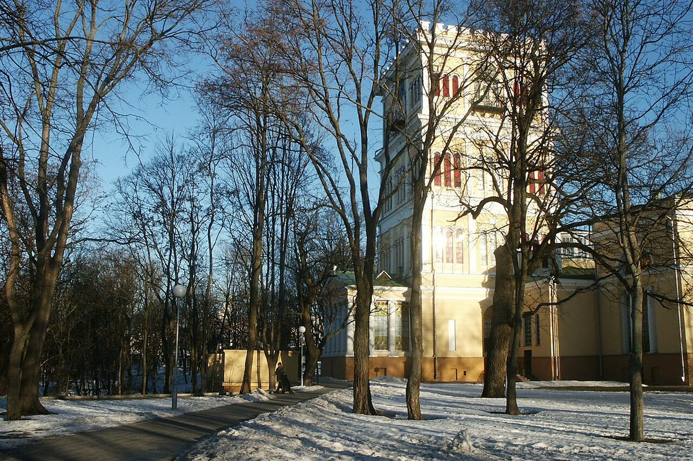
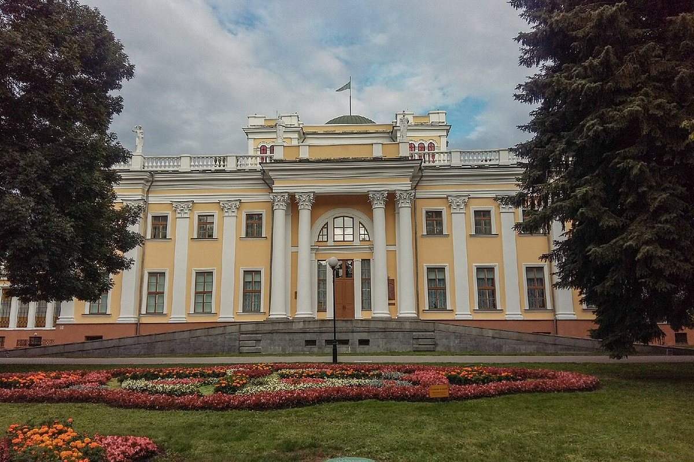

Адзін з самых цікавых помнікаў сядзібнай архітэктуры Беларусі, які злучыў класіцызм і эклектыку.
Гомельскі палац — адзін з самых цікавых помнікаў сядзібнай архітэктуры канца XVIII — сярэдзіны XIX стагоддзя ў Беларусі. Ён вылучаецца багаццем і пластычнасцю, спалучэннем класіцызму і эклектыкі.
Палац звязаны з родамі Румянцавых і Паскевічаў. Для ўдзелу ў будаўніцтве запрашалі архітэктараў і дэкаратараў з Расіі, Польшчы, Англіі і Італіі, а таксама мясцовых майстроў.
Архітэктура палаца цесна звязана з навакольным ландшафтам. У комплекс уваходзяць парк, Петрапаўлаўскі сабор, капліца-пахавальня Паскевічаў і гаспадарчыя пабудовы.
Сёння гэта адзін з галоўных музеяў Гомеля і кропка прыцягнення на набярэжнай Сожа. Палац і парк застаюцца візітнай карткай горада.

